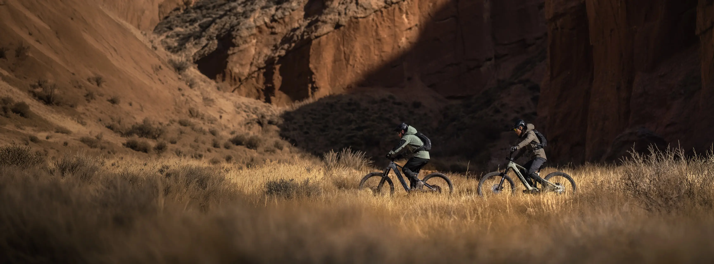
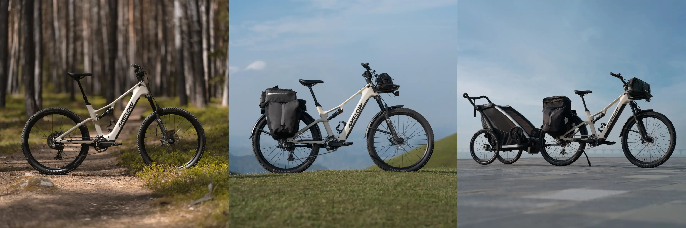
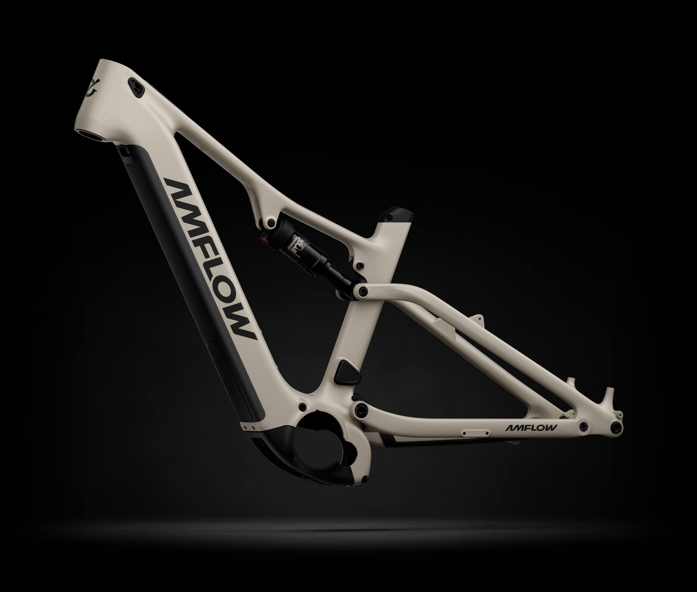
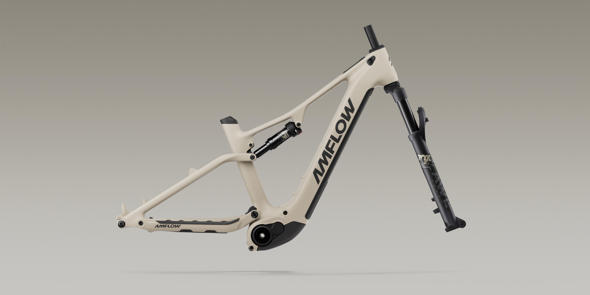
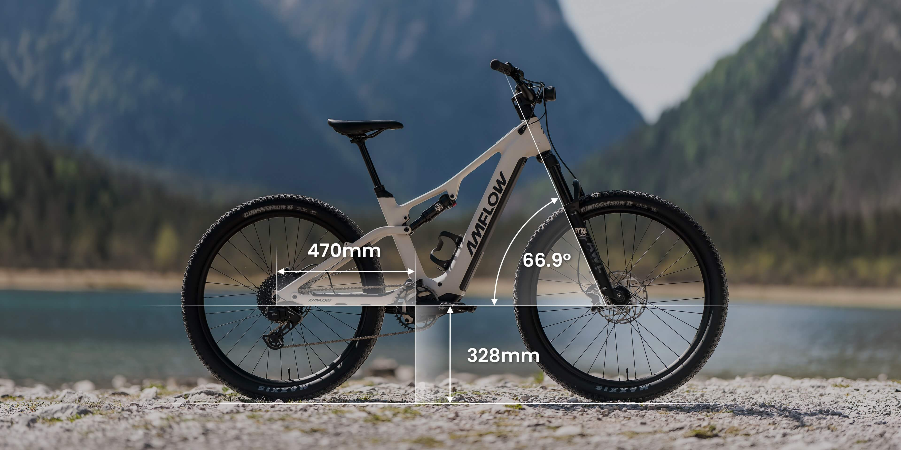
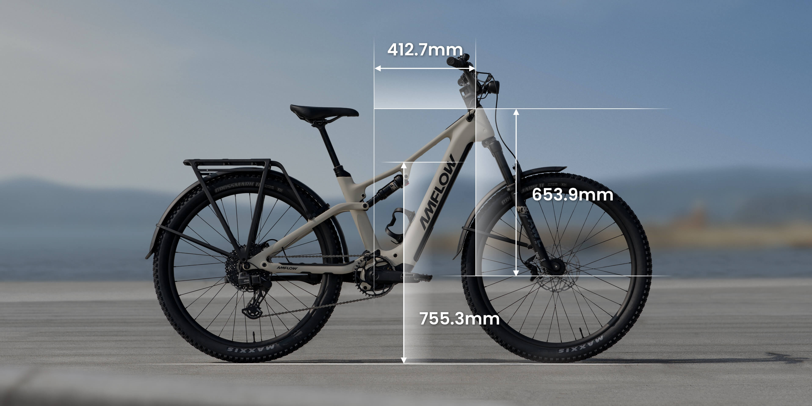

01 — OROX
不为一条路而生
OROX 以智能科技重新定义全地形骑行。我们把强劲动力、轻量结构与自然操控融为一体， 让通勤、越野和远行不再彼此割裂。
了解品牌理念 ↗02 — PRODUCTS
选择你的 OROX
三种设定，同一种探索本能。
03 — PERFORMANCE
力量，恰到好处
每一次输出都经过实时计算。更快响应，更自然介入，也更懂你的节奏。
最大输出扭矩
整车轻至
最大总重量
综合续航可达
04 — DETAILS
逐处细看
处处有答案
从车架几何到智能中控，每一处设计都服务于真实骑行。

01
一台车，多种生活
越野、远行、家庭出游，自由切换。

02
轻量碳纤维结构
坚韧与灵动，不必二选一。

03
智能中控
导航、数据与车辆状态，抬眼即见。

04
澎湃助力单元
毫秒级响应，让动力自然跟随。

05
模块化装载
把更多可能，稳稳带上路。
05 — OUR VISION
拓展移动的边界
也拓展生活的半径
我们相信，科技不该把人与世界隔开。OROX 希望用更自然、更可靠的骑行体验， 让每个人都能重新发现远方，也重新认识日常。
06 — CONTACT